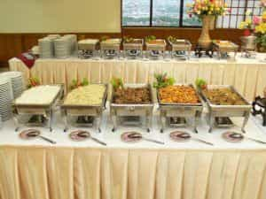
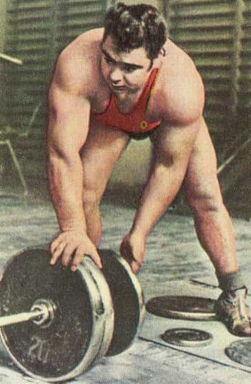
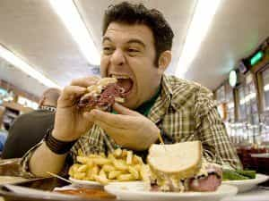
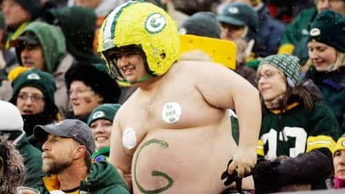

< < < Back
Beginner’s Guide To Cutting And Bulking – Return Of Kings
“Bulking” and “cutting” are terms that a lot of burgeoning fitness enthusiasts (and let’s be honest, the people interested in these terms are almost always men) will hear in their research, but will often be clueless as to what they actually mean; their understanding will be a rough one of “rapidly gaining and losing weight for some reason.” This article will explain why bulking and cutting are done, the different types of bulking, and the results of doing all of this.

Why Bulk?
Bulking is defined as deliberately packing on poundage with the intention of simultaneously stimulating muscular development through exercise, with the end goal of later slimming down and having larger and more impressive muscular definition. Cutting is the previously mentioned act of slimming down for purposes of having a trimmer physique.
The reason that this works is a simple one: Should you want to build muscle, you do so in the same way you build a fire—the more wood you put on the fire, the bigger the fire will be. Similarly, having a surplus of calories and various nutrients (proteins, amino acids, vitamins, fatty acids, etc.) will create bigger muscles. Or, to use the proper term, will keep the muscles in a state of anabolism, literally metabolic functions of creating large molecules from small molecules—most notably the formation of protein strands from amino acids.
From Wikipedia: “The surplus of calories relative to one’s energy balance will ensure that muscles remain in a state of anabolism.”
While eating a nutritional surplus will create an optimal internal environment for building muscle, it will by definition also be an optimal environment for increasing the size of adipose tissue as well-in short, an optimal environment for putting on fat. This is why Olympic weightlifters and strongmen tend to be fairly rotund, despite clearly having muscle underneath their flab.

In addition to this, extra fat tissue will also serve as a sort of cushioning for the joints that will have to bear the enormous weight brunted by an Olympic-class weightlifter, another specific benefit of having more fat on your body-and one of the few benefits of having an excess of fat (the negatives are well-documented, and don’t need to be discussed here).
Dirty And Clean Bulking
Now that we have established that bulking is simply eating more than you usually would to pack on pounds of both muscle and fat, we can further subdivide this broad concept into “dirty” and “clean” bulking, in increasing order of complexity.
Dirty bulking is, as is probably implied, the act of eating as much as you can without any pre-planning or portioning of nutrients. This is the easiest type of bulking to achieve-just increase your portions of food. Ideally, you would largely be eating food with actual nutritional value (ie: the “Dont Eat Shit” diet) rather than just eating cake and fast food-such food tends to give one the runs, which kind of defeats the purpose of eating more calories. However, in a dirty bulk you can make some concessions for desert after eating proper food.

A clean bulk is, in contrast, one where every calorie, vitamin, and gram of protein is deliberately calculated for maximum effectiveness—i.e., how to put on the most amount of muscle while putting on the least amount of fat to make the eventual cutting easier. While it is easier to describe when comparing it to the dirty bulk, the clean bulk is much more complicated.
If you’re going to be doing a bulk at all, I would recommend what I like to call the “half dirty half clean bulk” for beginners—as implied above, this is increasing your caloric intake without deliberation and planning but still eating halfway decent food (i.e., no fast food, junk food, etc.)
How To Bulk
As mentioned before, the dirty bulk is a fairly simple process: Just look at your daily intake of food, and increase it to whatever degree you’re comfortable doing. I would recommend eating all of the proper nutrients you should have learned in grade school, just more of them-to cite a few examples, you could have a couple more eggs and strips of bacon in the morning, some more meat and cheese in your lunch sandwich, a second hamburger or porkchop for dinner, and all the fixings on the side (don’t neglect vegetables and starches like rice either). If you’re still hurting for extra calories, try a protein shake with milk and oatmeal and yogurt in addition to the meals. Or have some snacks in between meals.
While you’re eating these extra nutrients, continue to work out strenuously. You will likely notice that your lifting is stronger than it was before. That’s the anabolism mentioned above in action. You will be building muscle at this point to a greater degree than you were before, but you will likely not be able to see it due to your also gaining fat.
It is worth pointing out that a person in the midst of a proper bulk is certainly fat, but more in the sense of “burly” rather than the standard type of fat. It’s sort of hard to describe, but is visible to even the untrained eye:

Observe this fat guy. Clearly, he’s not much of a physical specimen despite his size-his belly and waist are clearly wider than his shoulders and chest.
A Sample Bulking Diet
The bulking diet below is more or less one day on my “dirty-clean” bulk, as the foods enumerated here are more or less healthy—or at the very least, are things your great-grandfather would recognize as food. This is essentially what I ate to gain weight, with no deliberation beyond the quick and fast rule of “don’t eat shit.” In contrast, a dirty bulk has been described as “eat everything under the sun”.
Breakfast: 6 eggs cooked in any style, 6 strips of bacon, toast and butter, piece of hand fruit, and a glass of milk. Alternatively make yourself a bowl of oatmeal in cream with all of the side fixings detailed before.
Snack: Two peanut butter and jelly sandwiches on toast, glass of milk, and perhaps some cottage cheese on the side.
Lunch: A sandwich made with a quarter pound of meat, cheese, and other ingredients (some estimation might be necessary), with a side of French Fries or brown rice. Drink fruit juice or milk for their nutrients and calories.
Protein Shake: There are many recipes that can be found, but the one I like, taken and amended from Bodybuilding.com, is: 1 cup of dry oatmeal, 2 scoops of Greek yogurt, 2 scoops of protein powder, 1 teaspoon of cinnamon, 1 tablespoon of chopped almonds, 1.5 cups of milk.
Dinner: 2 homemade cheeseburgers with whatever trimmings you’d like on buns, with a side of leafy green vegetables cooked in whatever style you desire. Once again, drink fruit juice or milk.
Snack: A bowl of nuts, a piece of cheese, or something else that has good fat content.
As you can see, there’s nothing exotic or fancy about this diet, it’s really what the average person would be eating in their day, just greater quantities of it. Obviously, you don’t need to eat this exact meal every day, I cite this day of eating as an example of what to do: Just take what you would have eaten anyway, and have more of it. Throughout each week you bulk, be sure to continue exercising so you build muscle in addition to fat. If you’re really serious about gaining weight, I would reduce cardio to some degree: Instead of doing cardio twice a week as I usually recommend, just do it once a week and do another day of weight training.
Cutting
You probably have already assumed what cutting is, and your assumption is correct: It’s reducing calories and shedding your blubber. And since dirty bulking was theoretically simple, so is this. Just cut your portion sizes in half-or whatever fraction you desire-while continuing to exercise at your normal rate, if not increasing your exercise. To cite a previous article of mine, you can do your formal exercise routine (running, weights, etc.) as usual, while increasing your informal rate of exercise (I will once again advocate walking to and from places as a great way to burn calories without even thinking about it).
So, a day on a cutting diet would look something like this;
Breakfast: 2 eggs, 2 pieces of bacon, 1 piece of toast. Drink fruit juice, low fat milk, or water.
Lunch: A sandwich made smaller than the bulking sandwich, drink water with it.
Snack: 1 peanut butter sandwich with water, juice, or milk, and cottage cheese on the side.
Dinner: Filet of fish in olive oil with leafy green vegetables and brown rice.
Bearing in mind that you will experience some small degree of strength loss on a cutting diet, continue exercising as normal. I kept up my schedule of 2 days of resistance training, 2 days of running, and 2 days of martial arts, while also walking to and from any place that is within a round-trip distance of 5 miles-ie: if the trip to and from the destination combined is 5 miles or less, walk there. You don’t need to walk to and from casual sex like I did in school, but it certainly couldn’t hurt!
Within a month or two, you will lose your blubber and have the trim physique you desired. The only downside to this, as mentioned above, is that you will likely not be as strong as you were while fatter, due to eating a caloric deficit.
In conclusion, cutting and bulking are not really necessary for the person who just wants to get fit, get stronger, or lose weight. However, if you desire improvement of the purely aesthetic, I’d consider a regimen of this dietary technique.
Read More: 4 Fitness Myths That Are Pure Bullshit